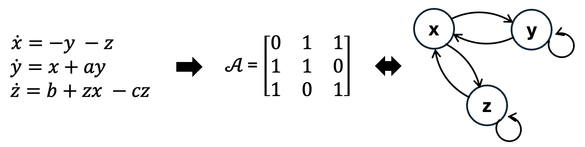

from datasets import load_dataset
ds = load_dataset("kausable/CausalDynamics")Leopold Mareis ![]()
CausalDynamics
| Resource | Information |
|---|---|
| Git + DOI | Git 12.3456/zenodo.11234567 |
| Short Description | CausalDynamics is a large-scale benchmark and extensible data generation framework designed to advance the structural discovery of dynamical causal models. In this notebook, we present the datasets in the benchmark. |
Introduction
Most existing benchmarks for causal discovery are built on synthetic data from static causal graphs or auto-regressive models, and real-world examples that exist lack a fully resolved causal ground truth. As a result, most methods are validated on toy systems or real-world data that fail to capture continuous state-space developments, complex feedback loops, stochasticity, and regime shifts. This is making it impossible to isolate algorithmic limitations from dataset characteristics. The paper CausalDynamics: A large‐scale benchmark for structural discovery of dynamical causal models (Herdeanu et al. (2025)) developed jointly by kausable GmbH and Columbia University addressed these issues and was accepted at NeurIPS 2025 (Datasets & Benchmarks Track). Next to the benchmark collection presented here, users of their Python package causaldynamics can generate custom datasets.
Statistical Model
We refer to the paper CausalDynamics: A large‐scale benchmark for structural discovery of dynamical causal models (Herdeanu et al. (2025)) for the details of the statistical model:
Dynamical system. For each time \(t \in \mathbb{R}_{\geq0}\), we characterize a dynamical system with an associated state \(x(t) \in \mathbb{R}^N\) for \(N \in \mathbb{N}\). In general, the description of the system dynamics are given through differential equations of the form: \[ \frac{dx}{dt} = f(t,x) + \delta \frac{dW_t}{dt} \] where \(f\) is a function, the solution \(x(t)\) depends on the initial condition \(x(t_0) = x_0\) at time \(t_0\), and \(\delta\) is the noise amplitude of the Brownian process \(W_t\). When \(\delta = 0\), this equation becomes ordinary differential equations (ODEs) whereas \(\delta > 0\) yields stochastic differential equations (SDEs).
Structural causal models. We describe causal mechanisms through structural causal models (SCMs) such that a system of \(d\) random variables \(\boldsymbol{x} = \{x_1, \dots, x_d \}\) is expressed as an arbitrary function \(f^k\) of its direct parents (causes) \(\boldsymbol{x}_{\text{PA}_k}\) and an exogenous distribution of noise \(\epsilon^k\): \[ x_k := f^k(\boldsymbol{x}_{\text{PA}_k}, \epsilon^k) \text{, for } k = 1, \dots, d \] For dynamical systems, we can combine the previous equations for a collection of \(d\) differential equations to define structural dynamical causal models (SDCM): \[ \frac{\text{d}}{\text{d}t} x_{k,t} := f^k(\boldsymbol{x}_{{\text{PA}_k,t}}, \delta), \text{with } x_{k,0} = x_k(0) \] where \(k \in \{1, \dots, d\}\).
Causal graph. The structural assignment of the SCM induces a directed acyclic graph (DAG) \(\mathcal{G} = (\mathcal{V},\mathcal{E})\) over the variables \(x_k\). \(\mathcal{G}\) includes nodes \(v_k \in \mathcal{V}\) for every \(x_k \in \boldsymbol{x}\) and directed edges \((k,i) \in \mathcal{E}\) if \(x_k \in \boldsymbol{x}_{\text{PA}_i}\) . Edges are represented in a squared adjacency matrix \(\mathcal{A} \in \mathbb{R}^{k\text{x}i}\) with each entry \(a_{ki} \in \mathcal{A}: a_{ki} = 1\) if \(x_i\) is causally impacted by \(x_k\), else \(a_{ki} = 0\). A corresponding graphical representation of the DAG is shown in Figure below:

The Benchmark on Huggingface
The benchmark is organized into three complexity tiers: (1) a simple tier with true causal graphs for hundreds of 3D chaotic dynamical systems; (2) a coupled tier that adapts a graph generation algorithm to combine deterministic and stochastic dynamical systems via periodic coupling functions, constructing thousands of complex graph structures; and (3) a climate tier with true causal graphs for two idealized atmosphere-ocean models, including multiple coupling experiments for different modes of variability.
All data is available on Huggingface. The following display visualizes three exemplary graphs and time series realizations.
import netCDF4
import numpy as np
import networkx as nx
import matplotlib.pyplot as plt
import matplotlib as mpl
def build_causal_graph(...):
"""Build a NetworkX DiGraph from a CausalDynamics NetCDF file."""
...
def plot_scm_from_nc(...):
"""
Plot the Structural Causal Model graph from a raw CausalDynamics NetCDF
bytes object.
Solid arrows = instantaneous edges, dashed arrows = lagged edges.
Grey nodes = root nodes (no incoming causes), orange = non-root.
"""
...
def plot_sample(ds, ds_row):
""" Combined plot: SCM graph + 3D trajectories """
...fig = plot_sample(ds, ds_row=41)key = coupled/coupling=linear_noise=0.00_systems=5_confounder=False_standardize=True_timelag=0_activation=none/data/SLORENZ_N10_T1000_seed2
fig = plot_sample(ds, ds_row=24)key = coupled/coupling=periodic_noise=0.50_systems=3_confounder=False_standardize=True_timelag=1_activation=mixed/data/SROSSLER_N10_T1000_seed1
fig = plot_sample(ds, ds_row=194)key = coupled/coupling=periodic_noise=1.50_systems=10_confounder=False_standardize=False_timelag=1_activation=mixed/data/SRAYLEIGHBENARD_N10_T1000_seed4
Summary of the Benchmark Collection
In total the benchmark contains 585 simple, 14,096 coupled, and 12 climate graphs (in total 14,693 graphs). Each graph constitutes 5 randomly initialized trajectories of 1,000 time steps. The HuggingFace dataset with contains 152,077 rows because each graph is replicated across multiple parameter settings (noise, confounder, timelag, activation, seed).
import re
from collections import Counter, defaultdict
def parse_key(key):
"""Parse a __key__ string into structured metadata."""
...
def summarize_dataset(keys):
"""Summarize and print structured metadata."""
...
keys = ds["train"]["__key__"][:]
records = summarize_dataset(keys)============================================================
TOTAL SAMPLES: 152077
============================================================
DOMAIN COUNTS
coupled: 146208
simple: 5745
climate: 124
--- CLIMATE (124 samples) ---
Subdomains: Counter({'coupled_enso_modes': 113, 'coupled_atmos_ocean': 11})
Drivers: Counter({None: 11, 'ATL3': 11, 'NPMM': 11, 'ESM': 11, 'TNA': 10, 'AO': 10, 'SPMM': 10, 'SASD': 10, 'SIOD': 10, 'IO': 10, 'IOB': 10, 'NONE': 10})
N values: Counter({10: 113, None: 11})
T values: Counter({1000: 113, None: 11})
--- COUPLED (146208 samples) ---
Coupling type:
linear: 48800
nonlinear: 48553
periodic: 48855
System type:
LORENZ: 37243
RANDOM: 34263
RAYLEIGHBENARD: 37260
ROSSLER: 37442
Noise level:
0.0: 26781
0.5: 29803
1.0: 29848
1.5: 29883
2.0: 29893
Num systems:
10: 42495
3: 51949
5: 51764
Confounder:
False: 73052
True: 73156
Time lag:
0: 73050
1: 73158
Activation:
mixed: 73008
none: 73200
N (nodes):
10: 146208
T (timesteps):
1000: 146208
Seeds:
0: 29568
1: 29257
2: 29325
3: 29132
4: 28926Usage
The primary use case is benchmarking causal discovery algorithms. Taking the time_series as input, running an algorithm allows for comparisons the inferred adjacency matrix against the ground-truth adjacency_matrix / adjacency_matrix_summary. The evaluation is done by comparing true and predicted adjacency matrices using AUROC, AUPRC, and Structural Hamming Distance (SHD). Candidate algorithms span constraint-based methods (PC, FCI), score-based methods (GES, NOTEARS), Granger causality, transfer entropy, PCMCI (for time-lagged effects), and neural/Koopman-based approaches. The tiered difficulty structure provides staged levels to isolate the limitations of causal discovery methodology.
Citing this Notebook
Please cite Herdeanu et al. (2025) and Mareis, Haug, and Drton (2025).
When using the CausalDynamics benchmarking dataset, please give credit to the original authors: Herdeanu et al. (2025)
Additional Information
License Information: Please follow the above DOI for license information of data and code.
References
Herdeanu, Benjamin, Juan Nathaniel, Carla Roesch, Jatan Buch, Gregor Ramien, Johannes Haux, and Pierre Gentine. 2025. “CausalDynamics: A Large-Scale Benchmark for Structural Discovery of Dynamical Causal Models.” arXiv Preprint arXiv:2505.16620.
Mareis, Leopold, Stephan Haug, and Mathias Drton. 2025. “MaRDI’s Zenodo Community for Graphical Modeling and Causal Inference.” Proceedings of the Conference on Research Data Infrastructure 2.